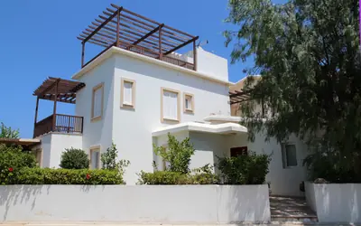
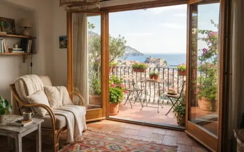

Todos los seguros para particulares
Entra en cada seguro para ver en detalle qué cubre. Cuando lo tengas claro, pídenos presupuesto y te preparamos una comparativa a medida.
Auto
Desde el seguro a terceros hasta el todo riesgo, con asistencia en viaje, vehículo de sustitución y defensa jurídica.
Ver seguro
Moto
En España el seguro de moto y de ciclomotor es obligatorio para circular libremente.
Ver seguroPatinete eléctrico
La responsabilidad civil para circular, y la opción de cubrir también los accidentes y el propio patinete.
Ver seguro
Hogar
Daños por agua, cristales, incendio, fenómenos atmosféricos, cortocircuitos, averías y robo.
Ver seguro
Alquiler vacacional
La vivienda de uso turístico tiene riesgos que una póliza de hogar corriente no contempla.
Ver seguroImpago de alquiler
Cobras la renta aunque el inquilino deje de pagar, con la vía judicial y los destrozos cubiertos.
Ver seguroComunidades
Protege el edificio de la comunidad de propietarios: estructura, continente y responsabilidad civil.
Ver seguro
Salud
Acceso a la sanidad privada: especialistas, pruebas diagnósticas y hospitalización, con o sin copago.
Ver seguro
Vida
Protege a tu familia ante un fallecimiento repentino o una invalidez permanente.
Ver seguro
Accidentes
Cubre los gastos ocasionados por un accidente e indemniza por fallecimiento o invalidez.
Ver seguroDecesos
Resuelve las necesidades materiales y acompaña a la familia ante el fallecimiento de un ser querido.
Ver seguro
Jubilación
Seguros de vida con fuerte componente de ahorro que cubren jubilación, invalidez y fallecimiento.
Ver seguro
Ahorro
Rentabilidades ventajosas según el plazo de imposición, con coberturas de invalidez y fallecimiento.
Ver seguro
Responsabilidad Civil
Indemnizaciones por los daños corporales, materiales o patrimoniales causados a terceros.
Ver seguro
Defensa Jurídica
Asegura la defensa de tus intereses, anticipa indemnizaciones y presta asistencia jurídica telefónica.
Ver seguroEmbarcaciones de recreo
Responsabilidad civil de navegación y las coberturas que necesites para navegar con tranquilidad.
Ver seguroOcupación ilegal
Comprobamos qué hace tu seguro si ocupan tu vivienda y lo completamos donde se quede corto.
Ver seguroSeguro para inquilinos
Protege tus pertenencias y tu responsabilidad civil cuando vives en una vivienda de alquiler que no es tuya.
Ver seguroEnfermedades graves
Un capital ante un diagnóstico grave, para que la enfermedad no se convierta también en un problema económico.
Ver seguro